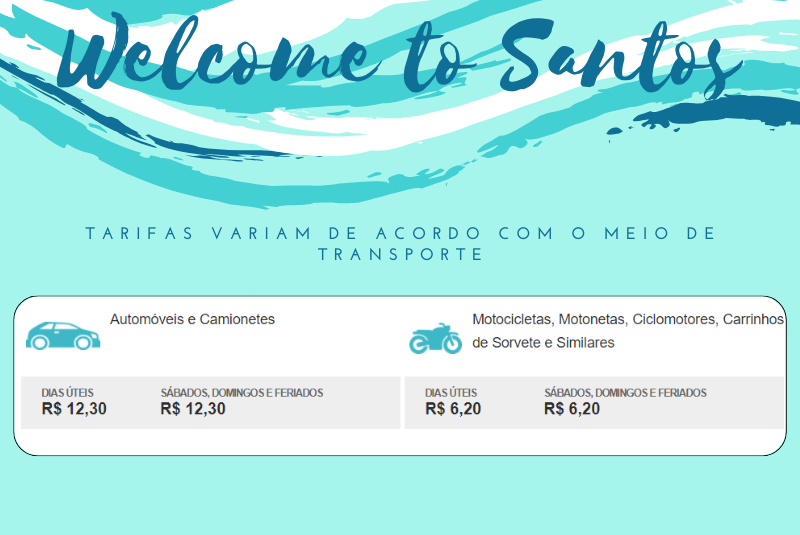

Travessia de Santos a Guarujá
A travessia de balsa entre Santos e Guarujá revela uma jornada tranquila pelas águas da Baixada Santista. Partindo das praias santistas, a balsa oferece vistas encantadoras do horizonte, com reflexos de sol dançando nas ondas. A chegada ao Guarujá proporciona um encontro com praias deslumbrantes e uma atmosfera relaxante , transformando a travessia em uma breve, mas memorável, experiência costeira.
Departamento Hidroviário do Estado de São Paulo
O Departamento Hidroviário (DH) de São Paulo, criado em 1966, gerencia as Hidrovias Paulistas. Além disso, o DH administra o Sistema de Travessias de passageiros e veículos, em espcial a travessia de Santos a Guarujá por balsas.
Departamento Hidroviário: Site oficial

Cidade Amiga do Ciclista
O Departamento Hidroviário (DH) garante segurança e qualidade nas travessias. Embarcações seguem rigoroso cronograma de manutenção, sendo aprovadas e certificadas. A acessibilidade é prioridade, com balsas gratuitas para ciclistas balsas gratuitas para ciclistas e embarque prioritário para idosos e pessoas com deficiência.
Departamento Hidroviário: Site oficial
Tempo de Espera
Tempo Médio de Espera: Fora do horário de pico, a espera média é de 15 minutos.
Variação de Horários: Os horários podem variar devido à demanda e às condições meteorológicas.
Departamento Hidroviário: Site oficial
Formas de Pagamento
Formas de Pagamento: A tarifa pode ser paga em dinheiro ou por meio de cobrança automática (Sem Parar, ConectCar, Move Mais, Veloe e Taggy).
Restrições de Pagamento: Não são aceitos cartões de crédito/débito, cheques ou boletos para pagamento posterior.
Departamento Hidroviário: Site oficial

Tarifas e Agendamento
As tarifas variam de acordo com o meio de transporte, sendo diferentes para carros e motos. Além disso, há alterações nos preços durante os dias úteis, aos sábados, domingos e feriados. Para finalizar, agende sua viagem pelo Hora Marcada e garanta rapidez e pontualidade na realização de sua travessia.
Agendamento - Hora Marcada: Site oficial